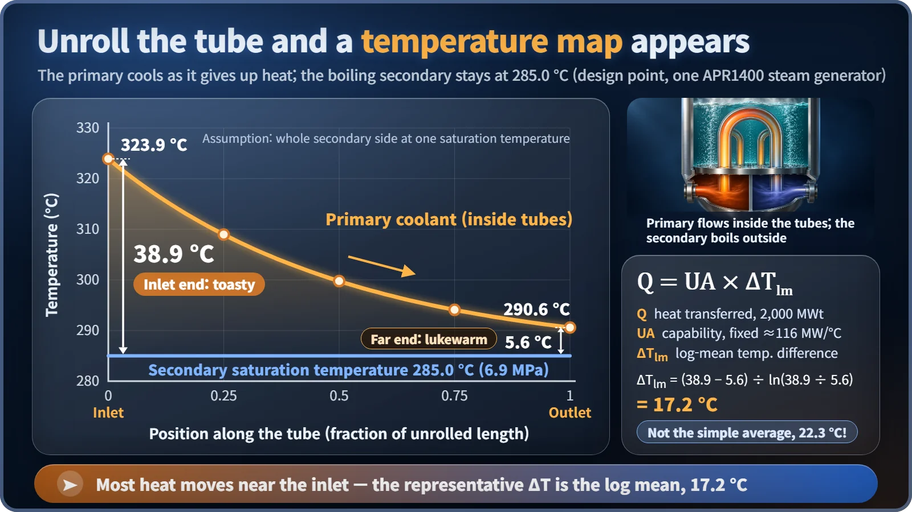
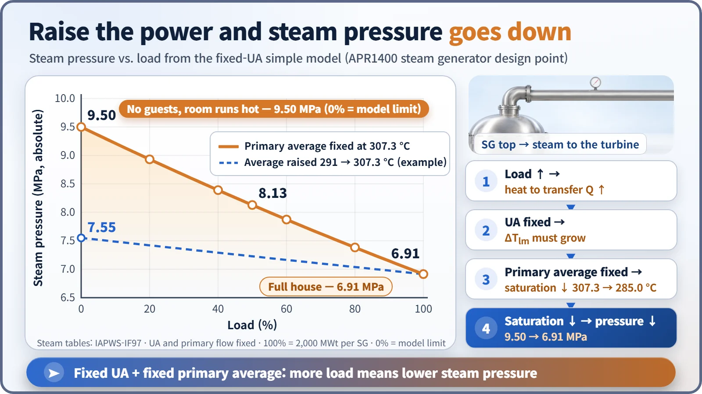

Modeling, Simulation & Computation · 271
Hot by the Inlet, Lukewarm at the Far End — Building a Simple Steam Generator Model
Three temperatures and a fixed heat-transfer capability are enough to predict a surprising operating fact, and to show what such a model cannot see.
A steam generator can be shrunk to one line, Q = UA × ΔTlm, using just three temperatures and a fixed heat-transfer capability. That single line already predicts something that surprises most people: in the simplest operating program, the more power a pressurized water reactor plant makes, the lower the pressure of the steam it sends to the turbine. [3]
Hot by the inlet, lukewarm at the far end
If you have ever lived with radiant floor heating, you know the feeling. Near the spot where the hot-water pipe enters the floor your feet are toasty; on the far side of the room the floor is only lukewarm. Traditional Korean homes have heated their floors this way for centuries (the system is called ondol), and modern underfloor heating works the same way. Hot water from the boiler snakes through pipes under the floor, hands its heat to the floor, and returns a little cooler. Where the pipe first enters, the water is hot and gives away a lot of heat; by the end of the loop it has already cooled and can only give away a little.
That ordinary bit of home heating explains why the steam pressure in a nuclear plant falls as electrical output rises. Let's build a simple steam generator model with one line of math and see why.
A giant heated floor: the steam generator
A steam generator is a large heat exchanger. It takes heat from the water warmed in the reactor (the primary coolant) and passes it to the water that drives the turbine (the secondary side). The primary coolant flows inside thousands of thin U-shaped tubes, and the secondary water surrounds them. The tube walls keep the two waters apart; only heat crosses over.
On the heated floor, the hot water in the pipes is the primary coolant, the floor is the tube wall, and the room is the secondary side. One difference matters a great deal: the secondary water is boiling. While water boils, its temperature is fixed by its pressure, which is why water boils below 100 °C on a high mountain. That temperature is the saturation temperature. Fix the pressure and you fix the saturation temperature; know the saturation temperature and you can work back to the pressure.
The whole steam generator in one line
Instead of calculating thousands of tubes and a pool of boiling water, keep just three temperatures: the primary inlet temperature, the primary outlet temperature, and the secondary saturation temperature. The heat transferred is written as:
Q = UA × ΔTlm
Q is the heat transferred each second. UA is the steam generator's heat-transfer capability: the tube surface area times how readily heat passes through the tube wall. In floor-heating terms, it is how much pipe you laid and how closely you spaced it. Once the equipment is built, we assume it is fixed. ΔTlm is the log-mean temperature difference, a single representative value for a temperature difference that changes along the tube. [6]

Now the real numbers. One steam generator in South Korea's APR1400 reactor moves about 2,000 megawatts of heat. Primary water enters at 323.9 °C and leaves at 290.6 °C, while the secondary side boils at 285.0 °C at 6.9 megapascals, about 68 times atmospheric pressure. [1] [2]
The temperature difference at the inlet end is 38.9 °C; at the outlet end it is only 5.6 °C. Averaging the two gives 22.3 °C, but the log mean, the value that actually represents the heat flow, is 17.2 °C. Using the simple average would overstate the heat by roughly 30%. Working backward, UA comes out to about 116 megawatts per degree.
| Quantity | Value |
|---|---|
| Heat per steam generator | 2,000 MWt |
| Primary inlet / outlet | 323.9 °C / 290.6 °C |
| Secondary saturation temperature / pressure | 285.0 °C / 6.9 MPa |
| Inlet / outlet temperature difference | 38.9 °C / 5.6 °C |
| Log-mean temperature difference | 17.2 °C (arithmetic mean 22.3 °C) |
| UA | ≈ 116 MW/°C |
More guests, cooler room?
Now set the model in motion. When electricity demand rises and the plant draws more steam, the steam generator must pass more heat. UA is fixed, so the only option left is for ΔTlm to grow.
Take the simplest operating assumption and hold the primary average temperature at about 307 °C. The primary side cannot get hotter, so the only way to widen the temperature difference is for the secondary saturation temperature to drop. In floor-heating terms: a house full of guests needs more heat from the floor, but the boiler water temperature stays the same, so the room has to get cooler before more heat flows. And when the saturation temperature drops, its partner, the steam pressure, drops with it.

Calculated with the international standard steam tables (IAPWS-IF97), the saturation temperature under this assumption falls in a straight line by about 22 °C across the load range. Steam pressure goes from 9.50 megapascals at 0% load to 8.13 at 50% and 6.91 at 100%. [5]
This feeds directly into design. Holding the average temperature fixed all the way down pushes low-load pressure so high that secondary-side equipment must be built stronger. Real plants therefore use compromise operating programs, for example letting the primary average temperature rise gradually with power. [3] [4] If the average temperature is raised from 291 °C to 307 °C, as an example, the pressure swing shrinks to roughly 7.55 to 6.91 megapascals. Exact values differ from one reactor design to another.
What the model can't see: swell and shrink
The simple model only shows balanced, steady states, so it misses what unfolds over time, especially swell and shrink of the water level. Draw a lot of steam suddenly and the pressure drops; bubbles in the water expand and more water flashes to steam, so the level gauge briefly rises even though the amount of water is falling (swell). Cut steam demand and the bubbles collapse, so the level briefly falls (shrink), much like the foam sinking when you turn down the burner under a boiling pot.
Capturing that needs a dynamic model: mass and energy conservation written as differential equations in time, with the secondary side split into several sections. That is also where the zone where cold feedwater warms up and the way heat transfer changes with power come in. The reactor-side energy balance belongs to a simple model of the reactor coolant system, and the steam generator model plugs into it as the "heat outlet."
Key takeaways
The simple steam generator model needs only the primary inlet and outlet temperatures, the secondary saturation temperature and a fixed UA. That is enough to show why steam pressure falls as power rises and why plants weigh their average-temperature programs carefully, while its blind spot, the swell and shrink of the water level, stays clear. A good model is one you use knowing what it cannot see as well as what it gets right.